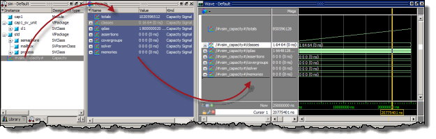

You can add capacity
information to the Wave window like any other signal. Simply drag-and-drop
a capacity type from the Objects window to the Wave window, or use
the add wave command.
Procedure
- To use the drag and drop method:
- Click the Structure (sim)
window tab.
- Select the Instance labeled
#vsim_capacity#. Selecting this instance displays a set of capacity
types in the Objects window (see Figure 1).
- Select one or more objects
in the Objects window. Note that you can click the [+] indicator
to expand the listing of data below any type.
- Drag and drop the selected
objects to the Wave window or click the middle mouse button when
the cursor is over an object.
Figure 1. Displaying Capacity
Objects in the Wave Window
- To use the add wave command
the correct syntax is:
add wave /#vsim_capacity#/ {* | assertions | classes | covergroups | qdas | solver | memories | totals}[.{Count | Current | Peak | Time}]
Examples
To display the count for classes
in the Wave window, enter the following:
add wave /#vsim_capacity#/classes.Count
The “totals” argument creates a pool
for memory data so you can see its growth. It allows you to produce
an analog waveform of the memory usage, which is especially useful
for revealing where you are leaking memory. Enter the command as
follows:
add wave -format Analog-Step -height 300 -max 1300000000.0 -radix decimal /#vsim_capacity#/totals
The default format of the "totals"
field in the #vsim_capacity# region is Analog, with a height of
500 and a maximum value that corresponds to the available physical memory.